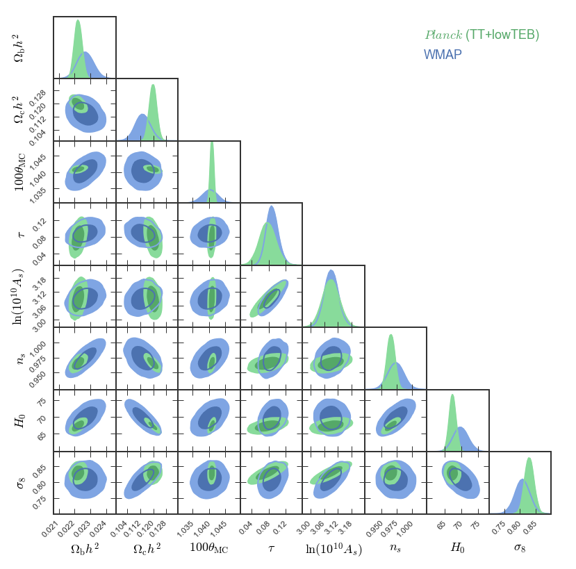

pygtc.py¶
Make a publication-ready giant-triangle-confusogram (GTC) with just one line of code!
This documentation is for the pygtc package, which is hosted at
GitHub.
What is a Giant Triangle Confusogram?
A Giant-Triangle-Confusogram (GTC, aka triangle plot) is a way of displaying the results of a Monte-Carlo Markov Chain (MCMC) sampling or similar analysis. The recovered parameter constraints are displayed on a grid in which the diagonal shows the one-dimensional posteriors (and, optionally, priors) and the lower-left triangle shows the pairwise projections. You might want to look at a plot like this if you are fitting model to data and want to see the parameter covariances along with the priors.
Although several other packages exists to make such a plot, we were unsatisfied
with the amount of extra work required to massage the result into something we
were happy to publish. With pygtc, we hope to take that extra legwork out of
the equation by providing a package that gives a figure that is
publication-ready on the first try!
Here’s an example of a GTC (generated from Planck and WMAP data):
Note about contour levels In the above example, you see two sets of contour levels at 68% and 95% (in addition, pygtc could also show the 99% contour level if you want). Note that these are indeed the 68% and 95% contour levels, and not 1, 2, and 3 sigma levels (which, in two dimensions, correspond to the 39%, 86%, and 99% contour levels). Your posterior distributions will in general not be Gaussian, and so there is no right or wrong in choosing one or the other definition. We therefore recommend that you stick to the definition that is commonly used in your field, and clearly state what quantities you are showing in your figure caption. You can switch to displaying sigma levels by setting sigmaContourLevels to True.
Contents:¶
Citation¶
If you use pygtc to generate plots for a publication, please cite as:
@article{Bocquet2016,
doi = {10.21105/joss.00046},
url = {http://dx.doi.org/10.21105/joss.00046},
year = {2016},
month = {oct},
publisher = {The Open Journal},
volume = {1},
number = {6},
author = {Sebastian Bocquet and Faustin W. Carter},
title = {pygtc: beautiful parameter covariance plots (aka. Giant Triangle Confusograms)},
journal = {The Journal of Open Source Software}
}